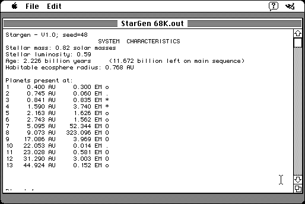

Download
StarGen.zip (328K) StarGen 1.0b7 repackaged into a zipped hfs disk image and checksum file. The disk image can be mounted with Mini vMac.
StarGen.sit (324K) StarGen 1.0b7 in the original format.
copyright: Eldacur Technologies
mod date: Nov 22, 2004
license: freeware
official url :
StarGen - Solar System Generator
A "random solar system generator". Requires System 7. Use the '-t' option to produce text only output (for example, type '-t' into command window, and click ok). Otherwise, output goes into the folder "html". This version is by Jim Burrows of Eldacur Technologies, but it "owes a lot to many different precursors written by several authors over the years." Source code is available.

Download source code
StarGenSource.zip (401K) StarGen 1.0b7 Source repackaged into a zipped hfs disk image and checksum file. The disk image can be mounted with Mini vMac.
StarGenSource.sit (389K) StarGen 1.0b7 Source in the original format.
If you find these downloads useful, please consider helping the Gryphel Project, which hosts them.
Here are the md5 checksums for the downloads, signed with Gryphel Key 5:
--------- GRY SIGNED TEXT --------- 4b7c40d709f89827431c5ca1de645cbe StarGen.zip 0fc6a7d78cfe2b788a57fbe2350af386 StarGen.sit 8b82d68a70a41845b1c8d66975a0db57 StarGenSource.zip a1b7bc4ea753a391978b5777d715d875 StarGenSource.sit ------- BEGIN GRY SIGNATURE ------- Gry/4Xa8CFcUzxdN/GfAVWbO0jjxfGw3H1bvy0eBESpjRZpTmiHN75lbCpun2xDL idbXK7p95wBL/1cWET1ODy6sXLxDMbM/BI++/wZHK0aHTvCAmsm7ypehVTvOb1jL rRhF/UcGNKNmKYkRz2oorTGJIRWdtC7ICSz07TiValGT9m8JxOdyct3bqQKyZIm2 -------- END GRY SIGNATURE --------